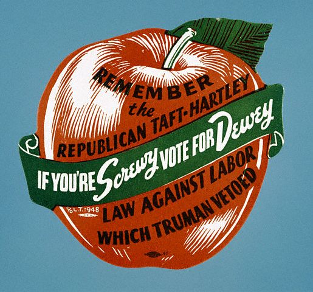

Nov. 12th & 13th -- Independence,
MO > St. Louis
As someone raised by a
history-loving dad, it just wasn't an option to
drive through Missouri and not visit Harry Truman's
Presidential Library and Museum. About 20 minutes by car from
downtown Kansas City,
Independence is like lots of small, midwestern towns: a few blocks of
spectacular
old homes and stately churches form a solid core. But push a ways out
and it's a sad little place: the roads are lined
with dilapidated houses and strip malls that were well past their prime
by the 70's. Still, Harry and Bess'
place was dapper
enough, and the museum and library were even more impressive.
We took in the obligatory museum movie, soaking up Truman's
life in visual shorthand. Moving from room to room we ran our eyes
over artifacts from his slice in time. The famous "Buck
Stop Here" sign that graced Truman's oval office desk now perches
in a spotlit, lucite display box. Just beyond is a replica of
his oval office, every detail
painstakingly reproduced--right down to his desk tchotchkes, the books
he kept on his shelves, and an enigmatic ear of corn on top of the
television, that even his biographer can't explain.
Truman was a prolific letter writer and many of these were on display,
too. In them, he comes across as a humble and
decent guy, deeply
devoted to his wife and daughter. (I know, I
know--it's his museum. Even still, you can't help but like the guy.)
The museum doesn't skirt the less palatable side of Truman: a corrupt
political machine run by Tom Pendergast gave Truman his break in
politics. With the machine behind him, Truman became a county judge,
which was an administrative rather than a traditional judicial post.
Though he didn't line his own pockets, Truman did award contracts to
those he was told to employ. Despite this, he managed to run the county
extremely efficiently. Pendergast thought having an honest judge under
his wing lent a little credibility to his organization; the county's
citizens were happy with the judge's performance, too. When Truman
finally broke free and was elected to the senate, it took him some time
to overcome his sticky beginnings. Senators who later became friends
wanted nothing to do with him when he first arrived in D.C., calling
him, "The Senator from Pendergast." But Truman went on to make a name
for himself, exposing waste and dangerous practices within the military
as the government was gearing up for war. You do get a sense of a guy
who meant to do his best and who wanted to be fair--someone who tried
really, really hard and who had a clear understanding of his own
inherent fallibility. And there's a poignant sense of how hard it must
have been for him both to step up to the office when Roosevelt died,
and how difficult it was to pull away and return to private life in a
sleepy little town when his terms were up. Harry and
Bess are buried somewhere on the museum's grounds. We didn't see the
site, but we're hoping it's not here.
Just doesn't seem
fitting. (Seriously--we haven't a clue why this is here. It's tucked on
the back side of the museum and it's just odd as hell. Hanna-Barbera's
tribute to the prez, perhaps?)
We had a pretty cursory
understanding of Truman's presidency as we pulled into Missouri and a
far better one by the time we rolled into Kentucky. While driving, we
listened to David McCullough's biography, Truman.
It's a little overly glowing, but worth a read or a listen, just the
same. (Warning: the
audio book is abridged.) We finished up the Truman show and continued
across Missouri. As we drove, we were amazed by the number of
billboards that simply read: Jesus. They made me long for punctuation.
For
example: Jesus? Or, perhaps, Jesus! A little research online let me
know that my wish would never be granted. In the words of Bryan Brand,
who started the Jesus
billboard project in St. Louis, "I had very precise instructions
from the Lord that anything we added to the name would diminish the
ministry."
The Jesus signs were only
outnumbered by those touting adult video and sex toy shops. These
weren't punctuated
either. Other billboard renters let ambiguity carry the day. My
favorite little vignette came from the one reading: "Moccasins, Knives,
Fireworks" Just the place to shop when you want to sneak up on someone,
stab
them, and light up the sky. The Amish Walnut Bowl Store signs
intrigued, too. They didn't dilute the message with unnecessary frills,
just the words "Amish Walnut Bowls." I'm picturing itsy-bitsy vessels,
suitable for serving, say, one blueberry.
The sun was hanging low in the sky and a fierce wind kicked up. We
pulled off the
highway at Rocheport, a
charming tiny town high up on a bluff, with a winery
that served a decent lunch and an even better view. Though wind
sometimes frightens Rufus, he was giddy to be in the country and
galloped around the grounds of this place with abandon. With bellies
filled, legs stretched, and Jesus secure on his billboard, we continued
on to St. Louis.
STATS:
Missouri wines tasted: 0
Historic sites visited: 2
Sex toys purchased: 0
Snoozed at: The
Ritz Carlton Clayton*
*Our friend Tom Murphy writes from Marin that his favorite
cross-country travel has always involved staying in funkier places than
we've visited on this trip. We understand and support that ideal. For
the first 40 some-odd years of our lives, we stayed in plenty of funky
places and they've yielded great stories, if not great nights' sleep.
One of the ironies of travel with a dog is that really nice hotels take
'em, middle of the road places generally don't, nor do most of their
wall-thumping cousins: the interesting dives. (I'm sure there are lots
of stories dive inn-keeps could tell about rampaging pit bulls that
would explain why.) Motel 6 does welcome pooches. Given the choice
between a low-end chain and a high-end chain, we'll admit that we're
not
unhappy to be on the high road.